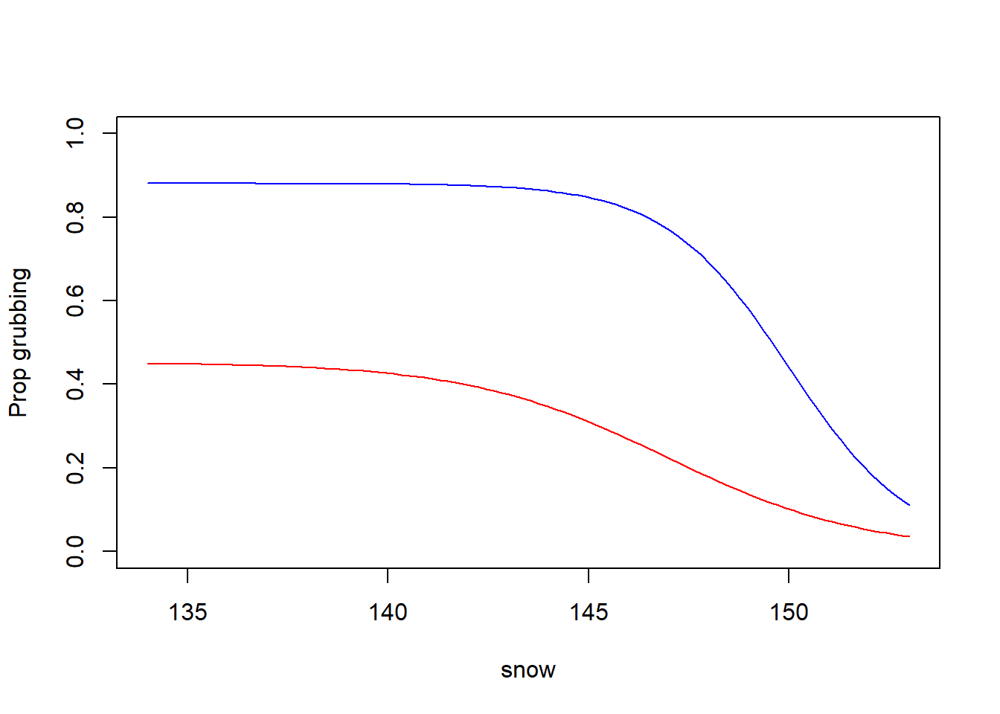

1 Disturbance prediction
- using the disturbance assessments from the field
1.1 Libraries
These are (probably) all the libraries you will need
1.2 Load files and clean
1.3 Modelling disturbance probability
A 'drc' model.
Call:
drm(formula = disturbance ~ expsnow, curveid = veg_class, pmodels = data.frame(veg_class, veg_class, veg_class), data = d, fct = LL2.3(), type = "binomial")
Coefficients:
b:dwarf shrub heath b:moss tundra d:dwarf shrub heath
0.4053 0.6467 0.4522
d:moss tundra e:dwarf shrub heath e:moss tundra
0.8808 146.9375 149.9983
Model fitted: Log-logistic (log(ED50) as parameter) with lower limit at 0 (3 parms)
Parameter estimates:
Estimate Std. Error t-value p-value
b:dwarf shrub heath 0.405260 0.265678 1.5254 0.127164
b:moss tundra 0.646744 0.224517 2.8806 0.003969 **
d:dwarf shrub heath 0.452189 0.080905 5.5891 2.282e-08 ***
d:moss tundra 0.880756 0.036498 24.1319 < 2.2e-16 ***
e:dwarf shrub heath 146.937477 3.032342 48.4568 < 2.2e-16 ***
e:moss tundra 149.998326 0.689450 217.5623 < 2.2e-16 ***
---
Signif. codes: 0 '***' 0.001 '**' 0.01 '*' 0.05 '.' 0.1 ' ' 1
Model fitted: Log-logistic (log(ED50) as parameter) with lower limit at 0 (3 parms)
Parameter estimates:
Estimate Std. Error t-value p-value
b:(Intercept) 0.583886 0.170616 3.4222 0.0006211 ***
d:dwarf shrub heath 0.443267 0.070605 6.2782 3.426e-10 ***
d:moss tundra 0.885464 0.034990 25.3065 < 2.2e-16 ***
e:dwarf shrub heath 147.887826 1.921969 76.9460 < 2.2e-16 ***
e:moss tundra 149.830037 0.674718 222.0632 < 2.2e-16 ***
---
Signif. codes: 0 '***' 0.001 '**' 0.01 '*' 0.05 '.' 0.1 ' ' 11.4 Calculate means and plot the predictions
png
2 1.5 Run model for use in next scripts
Running the same model with vegetation classes as with factors 1/2 instead of class names to use in the disturbance maps (disturbance_map_satellite, disturbance_map_drone). You can avoid this step by running the model with numeric factors from the beginning and then relabel for plotting instead…